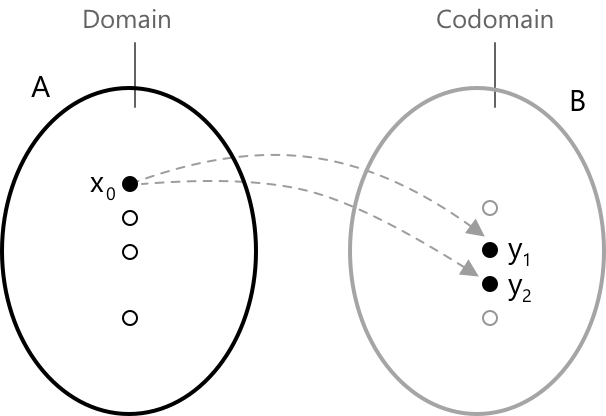

Функції
Що таке функція
Функція — це математичне правило, яке пов'язує дві непорожні підмножини дійсних чисел, які зазвичай позначаються як \( A \subseteq \mathbb{R} \) та \( B \subseteq \mathbb{R} \). Функція \( f \) з \( A \) в \( B \) ставить у відповідність кожному дійсному числу з \( A \) рівно одне дійсне число з \( B \). Цей зв'язок записується так: \[ f \colon A \to B \]
- Множина \( A \) називається областю визначення функції.
- Множина \( B \) — це область значень (кообласть).
- Для кожного \( x \in A \) функція дає єдине значення \( f(x) \in B \).
- Змінна \( x \) називається незалежною змінною, а \( y \) — залежною змінною.

Якщо таке правило виконується, ми кажемо, що функція коректно визначена. В іншому випадку відношення не є функцією, оскільки воно або не ставить у відповідність жодного значення, або ставить більше одного значення елементу області визначення.
Функцію з множини \( A \) (область визначення) в множину \( B \) (кообласть), \( f : A \to B, \) можна класифікувати як:
- Ін'єктивну: якщо кожний елемент \( B \) є образом щонайбільше одного елемента \( A \), тобто якщо для будь-яких \(x_1, x_2 \in A\) з \(x_1 \neq x_2\) маємо \(f(x_1) \neq f(x_2)\); еквівалентно, якщо для кожного \(y \in B\) існує щонайбільше один \(x \in A\) такий, що \(f(x) = y\).
- Сюр'єктивну: якщо кожний елемент \( B \) є образом принаймні одного елемента \( A \), тобто якщо \(\forall \, y \in B\) існує принаймні один \(x \in A\) такий, що \(f(x) = y.\)
- Бієктивну: якщо функція є одночасно ін'єктивною та сюр'єктивною, тобто якщо для кожного \(y \in B\) існує єдиний \(x \in A\) такий, що \(f(x) = y\).
Альтернативне означення стверджує, що функція \(f : A \to B\) є бієктивною тоді і тільки тоді, коли існує функція \(g : B \to A\) така, що: \[(g \circ f)(x) = x, \; \forall \, x \in A\] \[(f \circ g)(y) = y, \; \forall y \in B\] Якщо така функція \(g\) існує, вона визначена єдиним чином. У цьому випадку \(g\) називається оберненою до \(f\) і позначається \(f^{-1}\).
Прикладом оберненої функції є логарифмічна функція, яка є оберненою до показникової функції, і навпаки.
Що не є функцією
Для більшої ясності проілюструємо випадок, коли ми маємо ситуацію, подібну до показаної на попередньому рисунку, але де неможливо визначити функцію. Формально це відбувається, коли існують принаймні дві різні точки \( (x, y_1) \) та \( (x, y_2) \) такі, що \( y_1 \ne y_2 \). У цьому випадку відношення не задовольняє означення функції, оскільки одному значенню \( x \) відповідає більше одного значення \( y \).

На зображенні один елемент області визначення, позначений \( x_0 \), відповідає двом різним значенням у кообласті. Ця ситуація неприпустима відповідно до самого означення функції. Формально, відношення \( R \subseteq A \times B \) є функцією тоді і тільки тоді, коли:
\[ \forall \, x \in A, \; \exists! \, y \in B \; : \; (x, y) \in R \]
У цьому випадку існують \( y_1, y_2 \in B \) з \( y_1 \ne y_2 \) такі, що
\[ (x_0, y_1) \in R \quad \text{and} \quad (x_0, y_2) \in R \]
що порушує умову єдиності, необхідну для того, щоб \( R \) було функцією. Простіше кажучи, уявіть ситуацію, де певним значенням \(x\) відповідають певні значення \(y\), як показано в наступній таблиці.
| X | -3 | 1 | -3 | 5 | 2 |
|---|---|---|---|---|---|
| Y | 7 | 4 | 10 | -2 | 8 |
У цьому випадку відношення не є функцією, оскільки для одного й того ж значення \( x = -3 \) існують два різних відповідних значення \( y \), а саме \( y = 7 \) та \( y = 10 \). Це порушує фундаментальне означення функції, яке вимагає, щоб кожному елементу області визначення відповідав один і тільки один елемент кообласті.
Практичний графічний критерій для визначення того, чи крива на площині є функцією — це тест вертикальної прямої. Проведіть будь-яку вертикальну пряму і підрахуйте, скільки разів вона перетинає криву. Якщо кожна вертикальна пряма перетинає криву щонайбільше в одній точці, то крива є графіком функції.
- Для кожного значення \( x \) існує щонайбільше одне відповідне значення \( y \).
- Якщо деяка вертикальна пряма перетинає криву у двох або більше точках, крива не є графіком функції, оскільки цьому значенню \( x \) відповідало б кілька значень.
Різниця між кообластю та областю значень
-
Кообласть — це множина, яку ми оголошуємо як потенційну множину значень функції. Вона явно вказується в означенні функції. Наприклад, у функції, записаній як \( f: A \to B \), множина \( B \) є кообластю.
-
Область значень (або образ) — це фактична множина значень, які функція приймає при обчисленні на своїй області визначення. Вона включає всі значення \( f(x) \) для \( x \in A \). Область значень завжди є підмножиною кообласті.
Рівність функцій та нулі
Дві функції \( y = f(x) \) та \( y = g(x) \) вважаються рівними, якщо вони мають однакову область визначення \( D \) і задовольняють умову:
\[ f(x) = g(x) \quad \forall \, x \in D \]
Дійсне число \( a \in \mathbb{R} \) називається нулем функції \( y = f(x) \), якщо функція дорівнює нулю в цій точці, тобто:
\[ f(a) = 0 \]
Це означає, що графік функції перетинає вісь абсцис у точці \( (a, 0) \). Знаходження нулів функції є важливим для аналізу її поведінки, розв'язування рівнянь та визначення місць, де функція змінює знак.
Симетричні функції
При вивченні дійснозначних функцій часто корисно розуміти, як функція поводиться відносно відображень навколо початку координат. Це приводить до розрізнення парних та непарних функцій. Нехай \(A \subseteq \mathbb{R}\) — область визначення, симетрична відносно початку координат, тобто \(x \in A \Rightarrow -x \in A\). Функція \(f : A \to \mathbb{R}\) називається:
- Парною, якщо \(f(-x) = f(x) \quad \forall \; x \in A. \)
- Непарною, якщо \(f(-x) = -f(x) \quad \forall \; x \in A. \)
Більш загально, для функції \(f(x) = x^{n}\) з \(n \in \mathbb{N}\), функція є парною тоді, коли показник \(n\) парний, і непарною тоді, коли \(n\) непарний.
Обмежені функції
Перш ніж вводити формальні означення, корисно подумати про те, як дійснозначна функція поводиться на всій своїй області визначення. У багатьох ситуаціях ми хочемо знати, чи залишається функція в певних межах, ніколи не піднімаючись вище фіксованого порогу або ніколи не опускаючись нижче нього. Функція \(f : A \subseteq \mathbb{R} \to \mathbb{R}\) називається:
- Обмеженою зверху, якщо існує дійсне число \(M \in \mathbb{R}\) таке, що \(f(x) \leq M\) \( \forall \; x \in A.\)
- Обмеженою знизу, якщо існує дійсне число \(m \in \mathbb{R}\) таке, що \(m \leq f(x) \forall \; x \in A.\)
- Обмеженою, якщо вона задовольняє обидві умови вище, тобто існують \(m, M \in \mathbb{R}\), для яких \(m \leq f(x) \leq M\) виконується \( \forall \; x \in A\).
Важливо розрізняти поняття обмеженої функції та існування максимуму або мінімуму. Те, що функція обмежена, не означає, що вона дійсно досягає максимального або мінімального значення, глобально чи локально. Вимога обмеженості просто означає, що значення функції залишаються в межах скінченного інтервалу \([m, M]\).
Звичайно, якщо функція має глобальний максимум, то вона автоматично обмежена зверху. Аналогічно, наявність глобального мінімуму гарантує, що вона обмежена знизу. Однак обернене не є істинним: функція може бути обмеженою, не досягаючи жодного максимуму чи мінімуму. Типовим прикладом є:
\[
f(x) = \sin\!\left(\frac{1}{x}\right) \quad x \neq 0
\]
Ця функція завжди залишається між \(-1\) та \(1\), тому вона дійсно обмежена. Проте вона не має ні глобального максимуму, ні глобального мінімуму, оскільки при наближенні \(x\) до \(0\) осциляції стають довільно швидкими і функція ніколи не досягає своїх екстремальних значень.
Монотонні функції
При аналізі дійснозначних функцій розуміння того, чи функція зростає, спадає або зберігає послідовну напрямлену поведінку, є суттєвим. Ці ідеї виражаються через поняття зростаючих, спадних та монотонних функцій, які описують, як змінюються значення функції зі зростанням аргументу. Нехай \(A \subseteq \mathbb{R}\) і нехай \(x_1, x_2 \in A\) з \(x_1 < x_2\). Функція \(f : A \to \mathbb{R}\) називається:
- Зростаючою, якщо \(f(x_1) \leq f(x_2).\)
- Строго зростаючою, якщо \(f(x_1) < f(x_2).\)
- Спадною, якщо \(f(x_1) \geq f(x_2).\)
- Строго спадною, якщо \(f(x_1) > f(x_2).\)
- Монотонною, якщо вона задовольняє одну з наведених вище умов на всій області визначення.
Періодичні функції
Функція називається періодичною, коли її значення повторюються після фіксованого горизонтального зсуву. Більш формально, якщо \(X \subseteq \mathbb{R}\) і \(T > 0\) такий, що \(x + T \in X\) щоразу, коли \(x \in X\), функція:
\[
f : X \to \mathbb{R}
\]
є періодичною з періодом \(T\), коли \(T\) є найменшим додатним числом, для якого
\[
f(x + T) = f(x)
\]
виконується \(\forall \; x\) з області визначення. Як простий приклад, функції синуса та косинуса є періодичними: обидві повторюють свій повний цикл через інтервал довжиною \(2\pi\).
Класифікація функцій
Функції класифікуються як алгебраїчні або трансцендентні. Функція називається алгебраїчною, якщо її аналітичний вираз \( y = f(x) \) містить лише скінченну кількість операцій, таких як додавання, віднімання, множення, ділення, піднесення до раціонального степеня та добування кореня.
Алгебраїчні функції можна далі класифікувати за структурою їхніх виразів:
- Поліноміальні функції визначаються поліноміальним виразом, що містить степені \( x \) зі сталими коефіцієнтами.
- Раціональні функції виражаються як відношення двох поліномів.
- Ірраціональні функції містять змінну \( x \) під знаком кореня, наприклад \( \sqrt{x} \).
Трансцендентні функції виходять за межі алгебраїчних операцій і включають вирази, які не можуть бути записані за допомогою скінченної комбінації додавання, віднімання, множення, ділення та добування кореня. Поширеними прикладами є показникові функції, логарифмічні функції та тригонометричні функції.
Розуміння області визначення функції є важливим кроком у розв'язуванні рівнянь, нерівностей та в аналізі функцій. У більшості випадків визначення області визначення передбачає розпізнавання кількох фундаментальних ситуацій, підсумованих нижче.
Область визначення основних функцій
Нижче ми розглянемо області визначення найпоширеніших елементарних функцій. Однак на практиці багато функцій, що зустрічаються в реальних задачах, є значно складнішими, і їхні області визначення не можна визначити з першого погляду. Для всіх таких ситуацій, у яких структура виразу робить аналіз менш очевидним, ми посилаємось на цей метод, який надає систематичний спосіб визначення області визначення більш складних функцій.
Поліноміальні функції задаються виразами вигляду:
\[ y = a_0 x^n + a_1 x^{n-1} + \dots + a_n \]
де \( a_0, a_1, \dots, a_n \) — дійсні коефіцієнти та \( n \in \mathbb{N} \). Областю визначення поліноміальної функції є вся множина дійсних чисел, \( \mathbb{R} \), оскільки вона не містить жодних операцій, які могли б обмежити її визначення. Прикладом поліноміальної функції є:
\[ y = 2x^3 - 5x^2 + 3x - 1 \]
Цей вираз можна розглядати як лінійну комбінацію степенів \( x \), де кожен доданок \( a_i x^i \) має дійсний коефіцієнт \( a_i \). Поліноміальні функції такого типу визначені для кожного дійсного числа \( x \in \mathbb{R} \), оскільки жодна операція в їхній формі не накладає жодних обмежень на область визначення.
Раціональні функції мають вигляд:
\[ y = \frac{N(x)}{D(x)} \]
де \( N(x) \) та \( D(x) \) — поліноми. Ці функції визначені для всіх дійсних чисел \( x \), таких що \( D(x) \neq 0 \). Отже, областю визначення є \( \mathbb{R} \), за виключенням значень, які обнуляють знаменник. Прикладом раціональної функції є:
\[ y = \frac{x^2 - 4}{x - 2} \]
Цей вираз представляє відношення двох поліномів і може бути інтерпретований як лінійна комбінація степенів \( x \) як у чисельнику, так і в знаменнику. Раціональні функції такого типу визначені для всіх дійсних значень \( x \), крім тих, що роблять знаменник рівним нулю. У цьому прикладі функція не визначена при \( x = 2 \), оскільки це призвело б до зникнення знаменника.
Ірраціональні функції — це вирази вигляду:
\[ y = \sqrt[n]{f(x)} \]
Область визначення залежить від парності показника \( n \). Якщо \( n \) парне, функція визначена лише тоді, коли \( f(x) \geq 0 \), тому область визначення така:
\[ { x \in \mathbb{R} \mid f(x) \geq 0 } \]
Прикладом ірраціональної функції з парним показником є:
\[ y = \sqrt{x – 2} \]
У цьому випадку вираз під радикалом має бути невід'ємним, тому область визначення задається як \( x \ge 2 \). Таким чином, функція визначена лише для тих значень \( x \), які роблять підкореневий вираз \( x - 2 \) більшим або рівним нулю. Якщо \( n \) непарне, функція визначена для кожного значення в області визначення \( f(x) \). Прикладом з непарним показником є:
\[ y = \sqrt[3]{x – 2} \]
Тут кубічний корінь визначений для кожного дійсного значення \( x \), оскільки корені непарного степеня можуть мати від'ємні аргументи. Таким чином, областю визначення функції є вся множина дійсних чисел, \( \mathbb{R} \).
Логарифмічні функції визначаються як:
\[ y = \log_a{f(x)} \quad \text{при} \quad a > 0,\; a \ne 1 \]
Вони визначені лише тоді, коли аргумент логарифма є строго додатним. Отже, їхня область визначення така:
\[ {x \in \mathbb{R} \mid f(x) > 0 } \]
Прикладом логарифмічної функції є:
\[ y = \log_2(x - 1) \]
Ця функція визначена лише тоді, коли аргумент логарифма, \( x - 1 \), є строго додатним. Отже, область визначення \( x > 1 \). Для будь-якого значення \( x \), меншого або рівного \(1\), вираз стає невизначеним, оскільки логарифм невід'ємного числа не існує в області дійсних чисел. Іншим прикладом є:
\[ y = \ln(3x + 6) \]
У цьому випадку аргумент \( 3x + 6 \) також має бути додатним, тому область визначення \( x > -2 \). Той самий принцип застосовується до всіх логарифмічних функцій: аргумент логарифма завжди має бути більшим за нуль, щоб функція була визначеною.
Показникові функції вигляду:
\[ y = a^{f(x)} \quad \text{при} \quad a > 0,\; a \ne 1 \]
визначені для всіх значень в області визначення \( f(x) \). Прикладом показникової функції є:
\[ y = 2^x \]
Ця функція визначена для кожного дійсного значення \( x \), оскільки основа \( a = 2 \) є додатною і відмінною від \(1\). Її область визначення, таким чином, є всією множиною дійсних чисел, \( \mathbb{R} \), тоді як область значень є строго додатною, \( y > 0 \).
Показникові функції вигляду:
\[ y = [f(x)]^{g(x)} \]
визначені лише тоді, коли основа \( f(x) > 0 \), оскільки піднесення до степеня з дійсним показником вимагає додатної основи. Отже, їхня область визначення є перетином:
\[ \{ x \in \mathbb{R} \mid f(x) > 0 \} \, \cap \, \text{області визначення } g(x) \]
Показникові функції вигляду:
\[ f(x)^{\alpha} \]
де \( \alpha \in \mathbb{R} \setminus \mathbb{Q} \), визначені за наступних умов:
\[ \{ x \in \mathbb{R} \mid f(x) \geq 0 \}, \quad \text{якщо } \alpha > 0 \] \[ \{ x \in \mathbb{R} \mid f(x) > 0 \}, \quad \text{якщо } \alpha < 0 \]
Це гарантує, що результат виразу залишається в множині дійсних чисел.
Для тригонометричних функцій застосовуються такі області визначення:
\( y = \sin x, \quad y = \cos x \)
Область визначення: \( \mathbb{R} \)
\( y = \tan x \)
Область визначення: \( \mathbb{R} \setminus \left\lbrace \dfrac{\pi}{2} + k\pi \right\rbrace, \quad k \in \mathbb{Z} \)
\( y = \cot x \)
Область визначення: \( \mathbb{R} \setminus \left\lbrace k\pi \right\rbrace, \quad k \in \mathbb{Z} \)
\( y = \arcsin x, \quad y = \arccos x \)
Область визначення: \( [-1, 1] \)
\( y = \arctan x, \quad y = \text{arccot}\,x \)
Область визначення: \( \mathbb{R} \)
Як було зазначено вище, розуміння всіх цих випадків є важливим, оскільки вони відіграють вирішальну роль у багатьох областях математики та їхніх застосуваннях.
Операції над функціями
Коли дві дійсні функції визначені на одній і тій самій області визначення, їх можна комбінувати за допомогою звичайних алгебраїчних операцій, отримуючи нові функції, похідні від вихідних. Це узагальнює базову арифметику дійсних чисел на контекст функцій, де кожна операція застосовується поточково для кожного значення \( x \) в області визначення. У формальних термінах, якщо
\[ f : X_1 \subseteq \mathbb{R} \to \mathbb{R} \quad \text{та} \quad g : X_2 \subseteq \mathbb{R} \to \mathbb{R} \]
є двома функціями, ми визначаємо: \(X = X_1 \cap X_2\) як спільну область визначення, на якій можуть бути виконані наступні операції.
Сума двох функцій \( f \) та \( g \) визначається як:
\[ (f + g)(x) = f(x) + g(x) \]
Отримана функція присвоює кожному \( x \in X \) суму відповідних значень \( f \) та \( g \).
Різниця двох функцій задається як:
\[ (f - g)(x) = f(x) - g(x) \]
Добуток двох функцій визначається як:
\[ (f \cdot g)(x) = f(x) \, g(x) \]
Отримана функція представляє поточкове множення двох значень.
Частка двох функцій виражається як
\[ \left(\frac{f}{g}\right)(x) = \frac{f(x)}{g(x)} \]
але вона визначена лише для тих значень \( x \in X \), де \( g(x) \neq 0 \). Таким чином, область визначення цієї функції отримують, виключивши з \( X \) усі точки, при яких знаменник перетворюється на нуль.
Композиція двох функцій, що записується як \( (g \circ f)(x) = g(f(x)) \), є іншою фундаментальною операцією і детально розглядається на спеціальній сторінці про складені функції.
Вибрана література
-
University of California S. B., H. McGahagan. Functions: Definitions and Properties
-
University of California Davis, J. Hunter. Sets and Functions
-
University of Edinburgh, T. Leinster. Sets and Functions
-
Princeton University, R. Gunning. An Introduction to Analysis